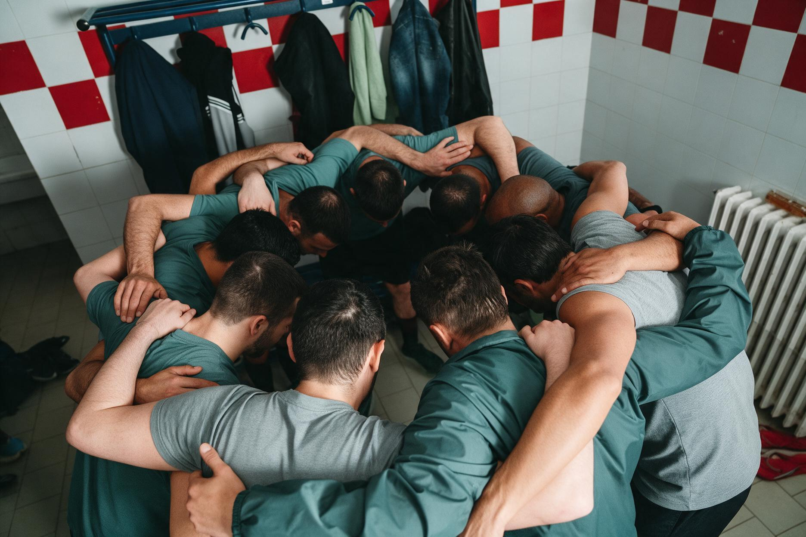

Den ultimative fordel på banen
Giv jeres atleter en unik, luksuriøs behandling. Med et avanceret trykkammer-setup (HBOT) øger I performance, forbedrer VO2Max, og skaber rammerne for en uovertruffen holdånd efter kampen.
Maksimer kapacitet og "return-to-play".
Hyperbaric Oxygen Therapy understøttes af tung videnskabelig evidens inden for elitesport. Det handler om at genoprette biologisk kapacitet og fysiologisk overskud hurtigere.
Performance forbedringer
Markant reduktion af skadesperioden
Case-rapporter fra professionel fodbold viser, at fraværsperioden ved udvalgte skader kan reduceres med mellem 55 % og 70 % ved brug af trykkammerbehandling.
[Kilde: 3] · [Kilde: 4]

Evidensbaseret recovery
Efter en udmattende kamp er et fælles recovery-miljø uvurderligt. Mens atleterne restituerer luksuriøst sammen og opbygger holdånden, arbejder 100% ilt under tryk på at reparere mikrotraumer.
-
Reducerer ødem og inflammation
Trykket formindsker hævelser ved akutte sportsskader øjeblikkeligt.
-
Hurtigere kollagen-syntese
Kritisk for at genopbygge brusk, ledbånd og muskelfibre op til 50% hurtigere.
-
Angiogenese (nye blodkar)
Fremmer dannelsen af nye blodkar til beskadiget væv og sener (som normalt har dårlig blodtilførsel).
Beregn jeres besparelse og merværdi
Indtast jeres egne tal for at se, hvor hurtigt trykkammeret tjener sig hjem i sparet løn, og hvor meget værdi I kan bevare i truppen ved at forlænge spillernes peak.
Lønbesparelse ved skader
Baseret på en gennemsnitlig halvering (50%) af skadesperioden.
Truppens værdi og periode for aktivt top-niveau
Beskyt klubbens dyreste aktiver. Ved at optimere cellernes alder (telomerer/mitokondrier) forlænges spillernes 'prime-time', og I undgår tidligt aldersbetinget værditab.
Skal jeres klub have en færdig løsning på skader, øget spillertid og højere præstation?
Vi analyserer klubbens behov, projekterer rummet, og drifter det som en lukrativ, medicinsk funderet luksusoplevelse for jeres spillere.
Book et møde eller præsentation